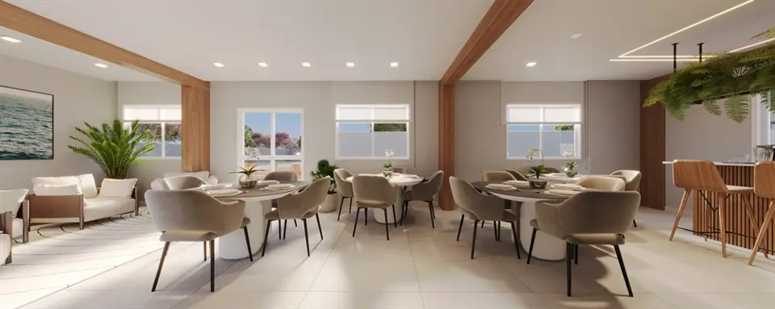

Imagens


Galeria
Imagens ilustrativas, de caráter artístico, conforme material da incorporadora.

Viva intensamente nessa batida
Descubra o Beat Residencial, um empreendimento da CTV localizado na Rua Carlos Xavier, nº 72, em Oswaldo Cruz, Rio de Janeiro. Oferecendo apartamentos de 2 quartos, com metragens de 45 a 99m² e coberturas duplex, o Beat Residencial combina conforto e estilo em um dos bairros mais promissores da cidade. Com localização privilegiada, o empreendimento garante fácil acesso a transporte, escolas e comércio. Construído pela renomada CTV, oferece qualidade e segurança. Além disso, proporciona valorização imobiliária e facilidades de financiamento, tornando-se um investimento seguro. Agende uma visita para conhecer as opções de plantas versáteis e realizar o sonho da casa própria.
Metragens, tipologias e disponibilidade conforme material oficial da incorporadora, sujeitos a alteração sem aviso. Valores e condições confirmados na tabela vigente. Seleção e atendimento: Paulo Cotrim, CRECI-RJ 77677-F.
Imagens ilustrativas, de caráter artístico, conforme material da incorporadora.